真实游戏画面。画面第 1–5 关，含两关教学与 sector01–03；细密短绒、柔软耳朵、布艺花盆。
14 色 · 70 张状态图 · 原关卡规则与数据
从第一关试玩 · 直接试玩第五关 · 验收记录
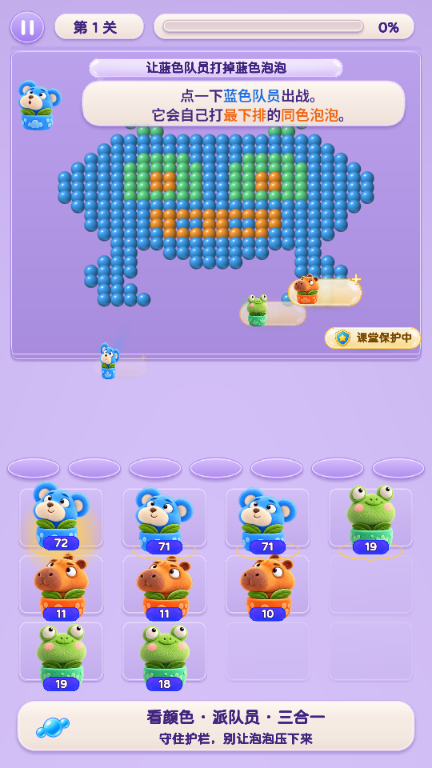
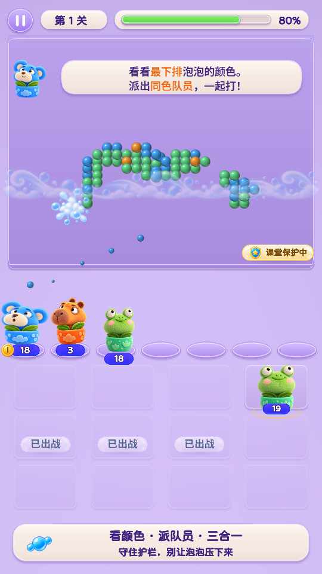
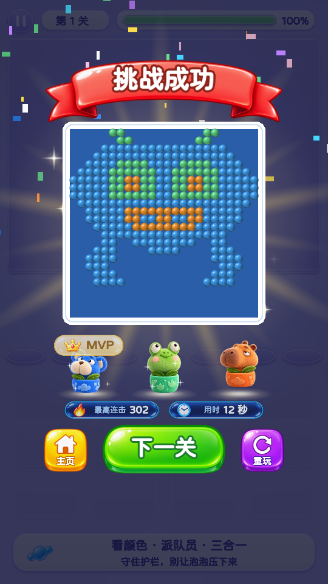
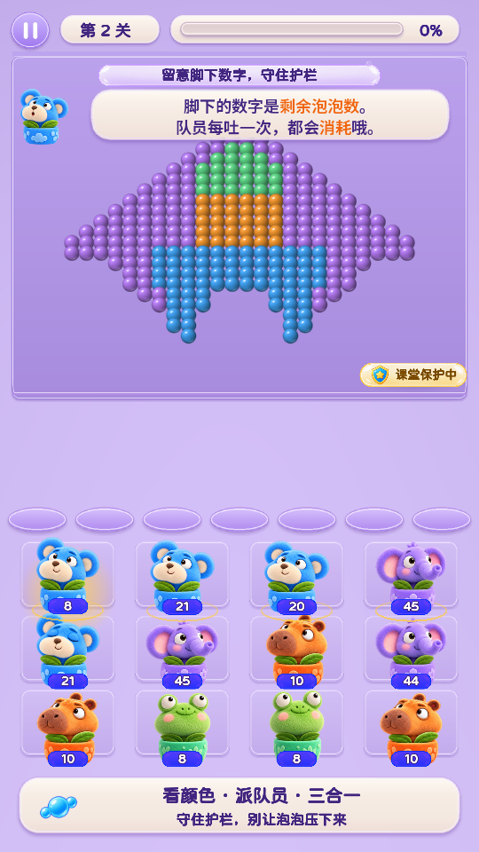
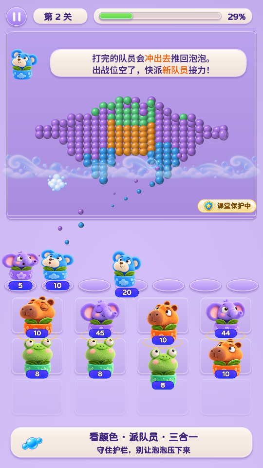
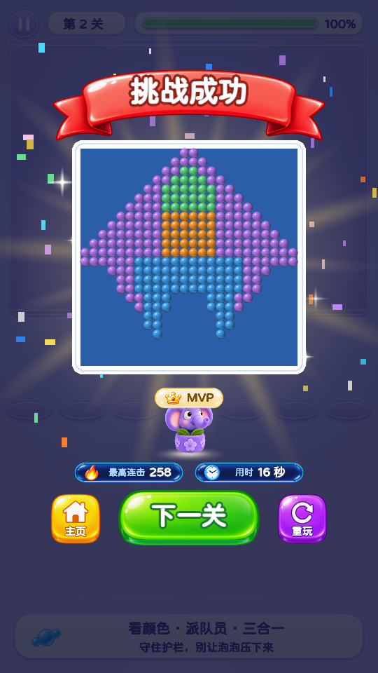
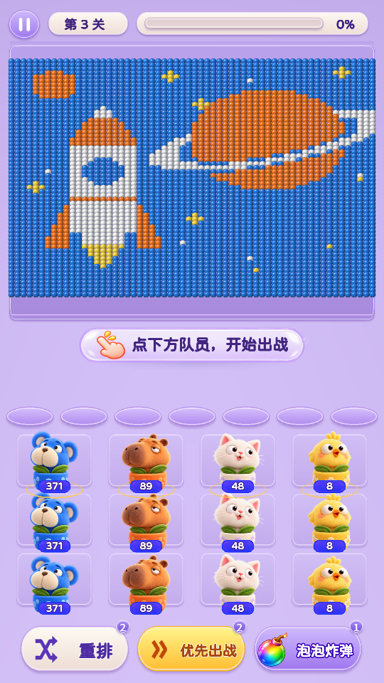
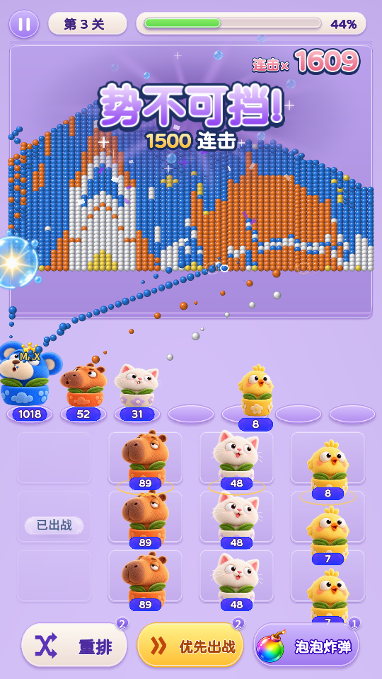
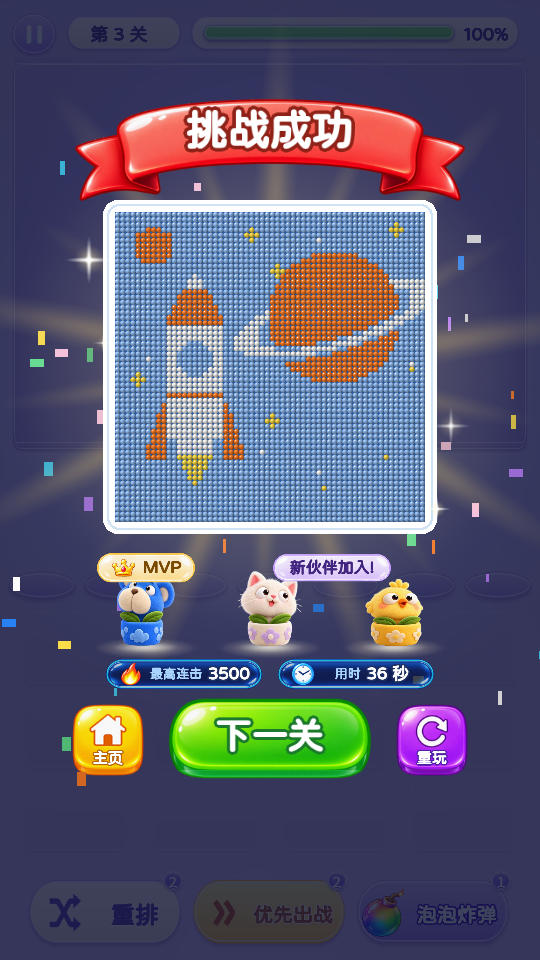
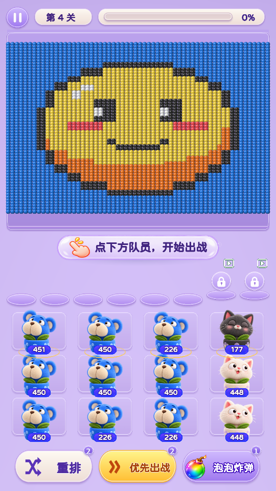
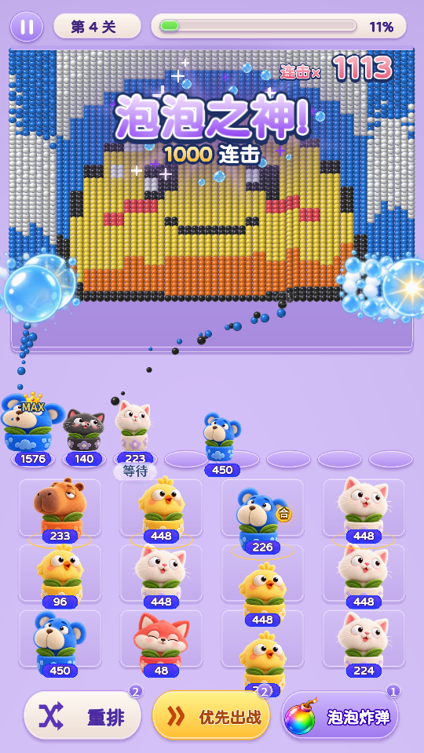
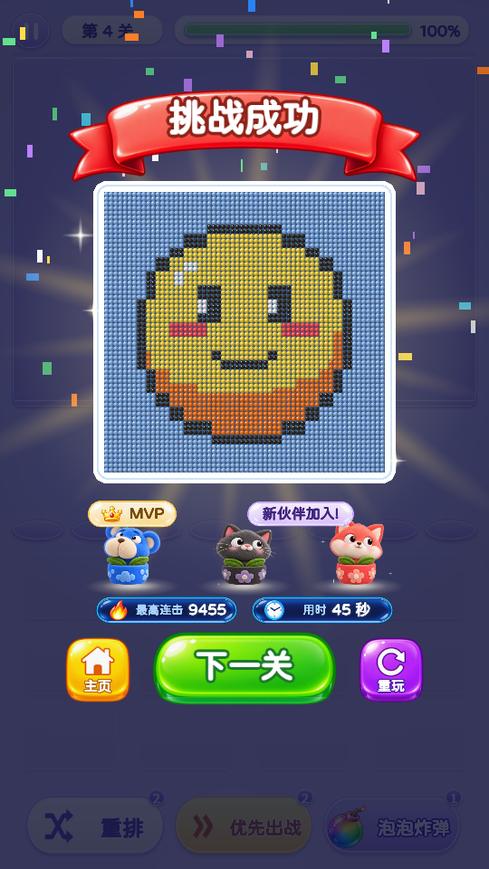
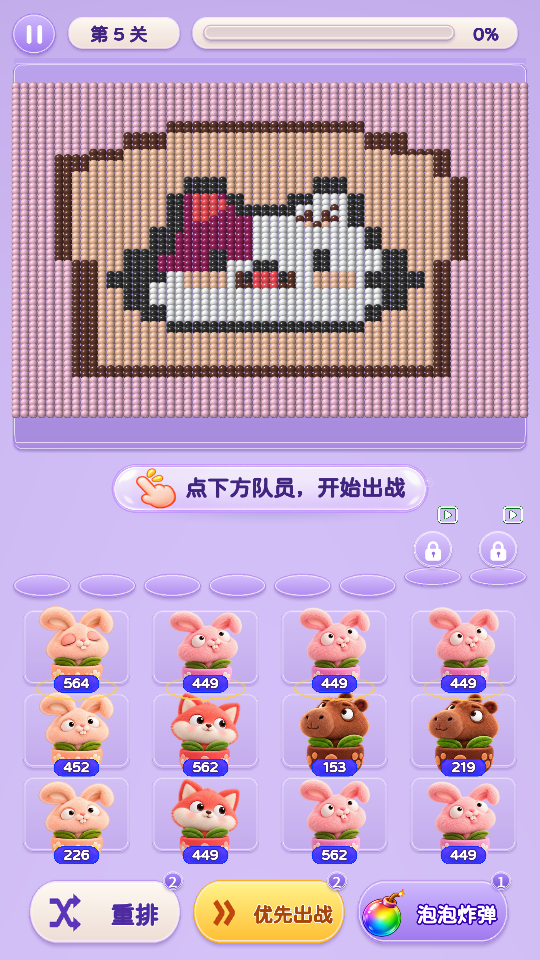
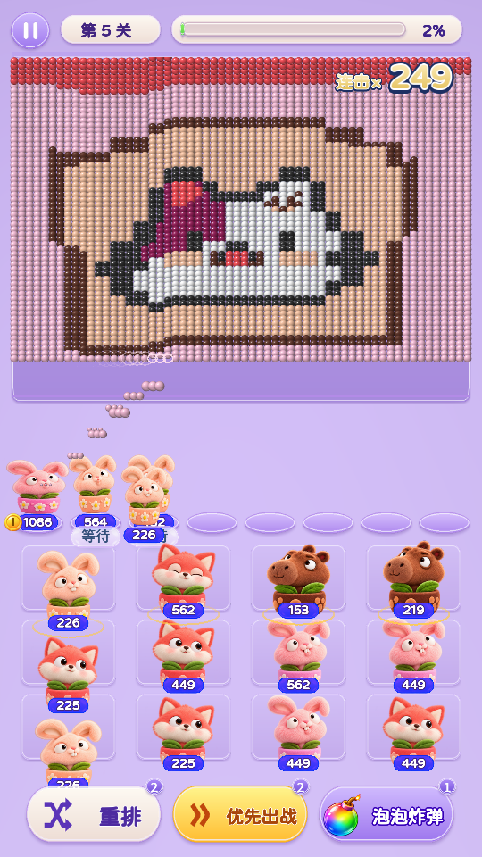
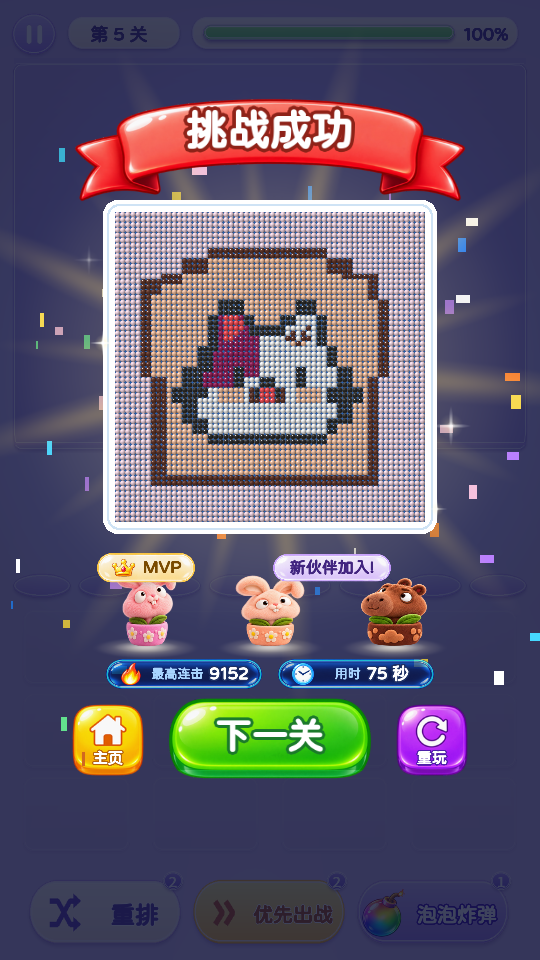
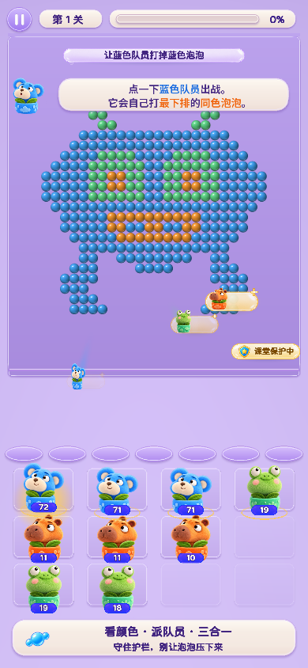
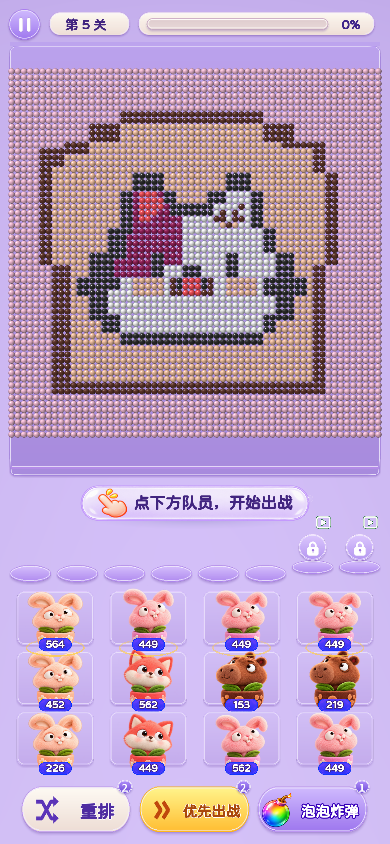
从左至右：待机、吹泡泡、耗尽、准备、眨眼。
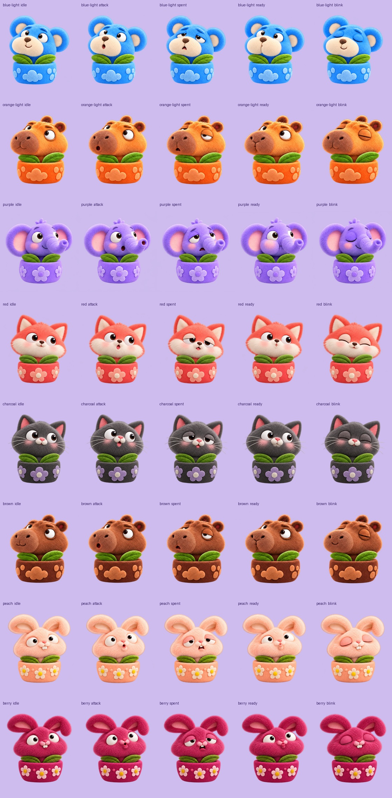
内置 image_gen 生成记录与提示词 · 三种背景下的毛尖边缘检查
仅本地构建。截图使用真实鼠标操作产生，完整过程在 evidence/。线上版本未更新。